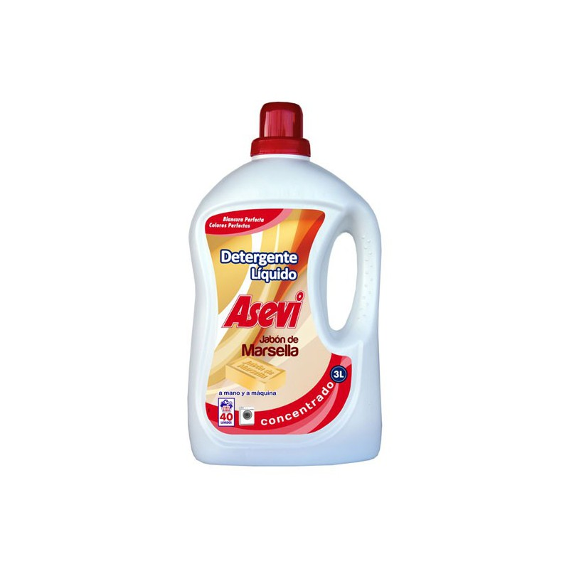
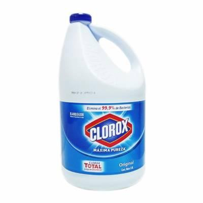
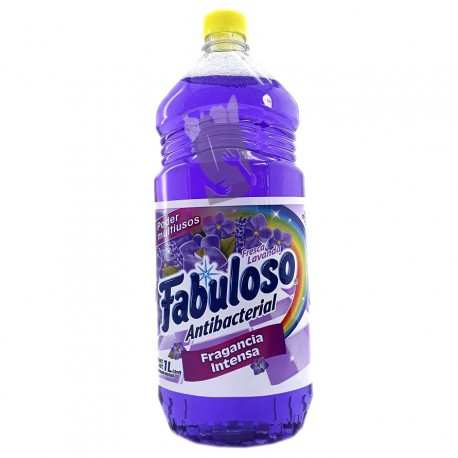
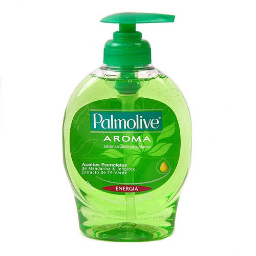

| PRODUCTOS |
| DESCRIPCION |
|  |
DetergenteEs una sustancia tensoactiva y anfipática que cuenta con propiedades quimicas que
se
encargan de disolver la suciedad e impurezas de una prenda sin maltratarla.
|
PRECIO: 28.000bs.S |
| 
| CloroEl cloro se utiliza (por lo general un determinado compuesto de cloro)
para matar las
bacterias en las piscinas y en el agua potable.
|
PRECIO: 48.000bs.S |
|  |
DesinfectanteMata o inactiva agentes patógenos tales como bacterias, virus y
protozoos impidiendo
el crecimiento de microorganismos patógenos en fase vegetativa que se encuentren en objetos inertes.
|
PRECIO: 20.000bs.S |
|  |
JabonEs un producto que sirve para la higiene personal y para lavar determinados
objetos. Se puede
encontrar en pastilla, en polvo, en crema o líquido.
|
PRECIO: 28.000bs.S |